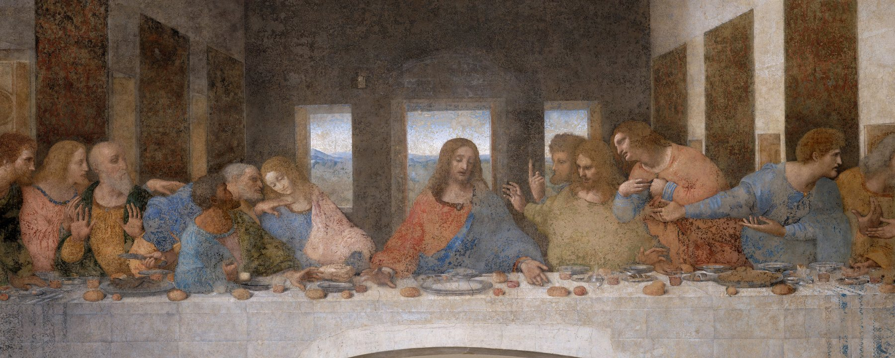
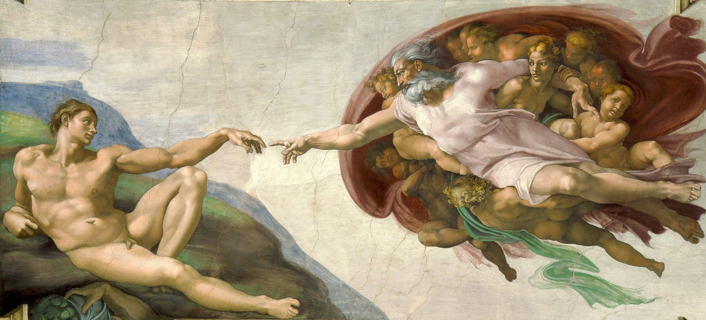

01 · SampulSebelum & sesudah
Bulan iniStruk · 47Saldo: ???
M-01 · Money NavigatorDaftar tunggu dibuka
Rahasia senyum Mona Lisa?Catatannya sudah rapi.
Ucapkan, ketik, atau foto. Lisa mengarsipkannya dalam lima detik.
02 · BukuSeptember 2026
Setiap hari ada yang dibayar. Mona mencatat semuanya.
Lisa · menungguArahkan ke tanggal
03 · CatatLisa mini
Satu kalimat,satu catatan.
Ucapkan, ketik, atau foto. Lisa memilah sisanya.
Lisa miniLR-01 · Perekam
Siap
- 01Terima
- 02Baca
- 03Pilah
- 04Buku
04 · ArsipHalaman depan app
Semua uangmu,satu tumpukan map.
Kiri: spreadsheet lama dengan rumus yang patah. Kanan: empat map di Mona yang selalu seimbang. Ketuk tab untuk membuka map.
Sebelumcatatan-2025.xlsx · 14 tab
TglKeteranganMasukKeluarSaldo
02/03gaji4.200.0004.200.000
03/03bensin60.0004.140.000
05/03kopi?—#REF!
07/03pinjam R.200.000#REF!
09/03(lupa?)?####
—=SUM(D2:D31)3,97
MaretMaret (2)Maret-fixMaret-FIX-final+10 tab
Struk menumpuk
Kopi susu18.000
Pulsa52.000
Parkir?
Total70.000?
47 struk belum dicatat
Catatan tempel
pinjam R.200rb? 300rb?
Nominal cuma diingat-ingat
Notifikasi bank
BCA09:14
Rp200.000 keluar
Mandiri12:02
Rp60.000 keluar
12 belum dicocokkan
3 rumus patah2 baris tanpa jumlahSaldo tak pernah cocok
SesudahHalaman depan Mona
4 dompetRp18.420.000
- BCARp9.240.000
- Bank JagoRp8.000.000
- TunaiRp768.000
- GoPayRp412.000
Emas · saham · reksa danaRp241.800.000
- SahamRp112.300.000
- Emas · 60 gramRp96.000.000
- Reksa danaRp33.500.000
Cicilan & tagihan−Rp11.870.000
- Cicilan motor · 8 bln lagi−Rp7.200.000
- Kartu kredit−Rp3.420.000
- Paylater−Rp1.250.000
Kekayaan bersih · Sep 2026Rp248.350.000
- AsetRp260.220.000
- Kewajiban−Rp11.870.000
- BersihRp248.350.000
0 rumus4 map, selalu seimbangDihitung otomatis
05 · BersamaSpace · Pro
Uang bersama,tanpa saling tebak.
Satu Space untuk keluarga atau usaha. Undang hingga 5 orang, dengan peran yang jelas.

Space · 4 dari 5 anggotaSinkron
Kode undangan · 8 hurufKPRZMTWE
Pesan suara · Raka
“tolong catat parkirnya ya”
Parkir · Rp5.000oleh Raka
Undang lewat kode 8 huruf
Anggota boleh akun gratis
Data aman saat Pro berakhir
06 · Cocok untukEnam situasi
Cocok untuk kamuyang tak sempat mencatat.
Mona dibuat untuk orang yang sibuk. Pilih situasi yang paling mirip denganmu, dan lihat bagaimana Mona dan Lisa membantunya, lengkap dengan paket yang pas.
P-01Paket Gratis
- Gajian
- Tanggal 25
- Terpakai
- 64%
- Hari ke
- 16 / 31
Karyawan yang gajiannya cepat habis
Gajian tanggal 25, tanggal 10 sudah bertanya-tanya uangnya ke mana. Catat kopi dan parkir lewat suara.
Lisa · baru dicatat“kopi susu 28 ribu gopay”
Kopi · Rp28.000
SuaraAnalisis mingguan
P-02Paket Pro
- Anggota
- 4 / 5
- Catatan minggu ini
- 38
- Peran
- 4
Pasangan dan keluarga
Belanja dicatat berdua. Kamu sebagai pemilik, pasangan ikut mengelola, anak atau ART cukup mencatat.
Lisa · baru dicatat“beli beras 65 ribu”
Belanja · Rp65.000 · oleh Pasangan
Space bersamaEmpat peran
P-03Paket Pro
- Laba minggu ini
- +Rp1.240.000
- Pencatat
- 2 staf
- Kategori usaha
- 3
Pemilik warung dan usaha kecil
Modal, jualan, dan uang dapur tidak lagi bercampur. Staf mencatat, kamu memantau, konsultan cukup melihat.
Lisa · baru dicatat“beli plastik kemasan 85 ribu”
Usaha · Rp85.000 · oleh Staf
Space bersamaPencatatPengamat
P-04Paket Gratis
- Masuk bulan ini
- +Rp7.500.000
- Rata-rata 3 bulan
- Rp6.200.000
- Proyek
- 3
Freelancer dengan bayaran tak menentu
Bayaran masuk kapan saja. Catat sekali, lalu lihat apakah bulan ini cukup.
Lisa · baru dicatat“terima bayaran desain 3 juta”
Pemasukan · +Rp3.000.000
SuaraKategori sendiri
P-05Paket Gratis
- Kiriman
- Rp2.000.000
- Sisa
- Rp640.000
- Aman per hari
- Rp45.700
Anak kos dan mahasiswa
Kiriman datang sebulan sekali. Lihat sisa uangmu tiap hari, jangan menunggu tanggal tua.
Lisa · baru dicatat“makan siang 15 ribu”
Makan · Rp15.000
KetikFoto struk
P-06Paket Gratis
- Baris
- 312
- Kolom dipetakan
- 5 / 5
- Duplikat
- 0
Pencatat setia spreadsheet
Catatanmu sudah ada di Excel. Unggah CSV atau Excel, cek pratinjaunya, lanjut dari sana.
Lisa · imporcatatan-2026.xlsx
312 baris siap diimpor
Impor CSVExcel
07 · CeritaDua nama, satu senyum
Dua nama,satu senyum.
Mona Lisa adalah lukisan yang membuat orang berhenti dan menatap. Kami meminjam namanya, lalu membaginya jadi dua: Mona sebagai pemandu, Lisa sebagai asisten. Ceritanya ada di buku di bawah. Bukalah halaman demi halaman.
Buku cerita · edisi awalKlik tab, panah, atau geser halaman
Mona · Money NavigatorBuku cerita01Bab 01 · SenyumSebuah lukisan,sebuah senyum.
Di salah satu ruangan Museum Louvre, orang-orang berdesakan di depan lukisan yang ukurannya tidak seberapa besar. Mereka tidak sedang menunggu apa-apa. Mereka hanya menatap seraut wajah yang tersenyum tipis, lalu mencoba menebak apa yang sedang dipikirkannya.
Itulah Mona Lisa. Leonardo da Vinci mulai mengerjakannya sekitar tahun 1503, dan lima abad kemudian orang masih berhenti untuknya. Senyum itu terasa tenang, padahal tak seorang pun tahu isi kepalanya.
Urusan uang sering terasa sebaliknya: riuh dan penuh tebak-tebakan. Kami ingin catatanmu setenang senyum itu.
Dari senyum ke pikselMuseum Louvre · ParisMona Lisa
Leonardo da Vinci, sekitar 1503. Cat minyak di panel kayu poplar. Dikenal lewat senyum yang sulit ditebak.
Rakit Lab · Segera hadirMona + Lisa
Rakit Lab, 2026. Kertas, tinta, layar titik, dan AI seperlunya. Dikenal lewat catatan yang sudah rapi.
Mona · Money NavigatorBuku cerita02Bab 02 · NamaKenapaMona?
Mona adalah singkatan dari Money Navigator, penunjuk arah untuk uangmu. Namun namanya juga membawa cerita lain.
Pada lukisannya, kata mona berasal dari madonna, sapaan hormat yang kira-kira berarti nyonya. Seperti orang yang mengurus rumah dan hafal isi setiap laci. Itulah peran yang kami inginkan untuk Mona: tidak menggurui, tapi tahu persis di mana semuanya berada.
Lalu, LisaLalu,kenapa Lisa?
Lisa adalah asisten kecil di dalam Mona. Dia mendengar, membaca struk, dan mengarsipkan catatanmu. Wajah pikselnya ikut tersenyum dan berkedip pelan, seperti teman yang selalu menyimak.
Di telinga kita, Lisa juga dekat dengan lisan, dan cara tercepat mencatat memang tinggal bicara. Ucapkan saja, sisanya urusan Lisa.
Lisa · siap mencatatHalo, aku Lisa.
Mona · Money NavigatorBuku cerita03Bab 03 · KertasTerlihat analog.Percayalah, ini canggih.
Mona memakai bahasa kertas: map, tinta, stempel, layar titik. Itu disengaja. Uang adalah urusan serius, dan tampilan yang tenang membantu kita memeriksa dengan kepala dingin.
Tapi tenang bukan berarti sederhana. Seperti angsa di permukaan danau, yang terlihat hanya gerak yang pelan. Di halaman sebelah, kami membuka sedikit kertasnya supaya kamu bisa melihat apa yang bekerja di baliknya.
Lisa · di balik kertasTenang di luar, sibuk di dalam.
Di balik kertasYang kamu lihat,yang bekerja di dalam.
Struk dan catatan tempel yang kamu lihat sebenarnya dibaca lalu dipilah jadi tanggal, jumlah, dan kategori dalam lima detik. Map arsipnya terkunci per baris, disimpan di server Mona di Singapura lewat koneksi terenkripsi. Lonceng notifikasi mengubah kabar dari aplikasi bank menjadi catatan, tanpa login bank dan tanpa PIN. Catatan harian Lisa merangkum pola uangmu tiap minggu, dan Lisa menyalurkan pertanyaanmu ke Gemini milik Google — pemrosesannya bisa di luar Indonesia. Terakhir, kunci undangan membuat Space tersinkron hingga lima orang dengan empat peran.
Mona · Money NavigatorBuku cerita04Bab 04 · RupaRapi dan kaku,tapi tidak dingin.
Mona disusun di atas grid yang kaku: garis rambut, sudut kecil, label mono, dan angka yang selalu sejajar. Semua berbaris, supaya angka mudah dibandingkan dan tidak ada yang tersembunyi.
Tapi uang bukan urusan dingin. Ia berisi gajian yang ditunggu, kopi yang dibeli buru-buru, dan cicilan yang dipikirkan menjelang tidur. Maka kami menambah sedikit hal yang akrab di tangan: warna kertas, tinta pekat, dan satu jingga untuk stempel.
Angka sebaiknya terasa ditulis oleh manusia, dan dibaca oleh manusia.
Papan inspirasi · sentuh tiap tempelanLisaSentuh tiap tempelan untuk membaca alasannya.
Mona · Money NavigatorBuku cerita05Bab 05 · PenutupDibuatdengan tenang.
Baru
mulai
Mona dibuat oleh Rakit Lab pada 2026, dari kertas, tinta, layar titik, dan AI seperlunya. Tujuannya sederhana: catatan yang sudah rapi, sebelum kamu sempat merapikannya sendiri.
Kami tidak ingin uangmu terasa seperti ujian. Kami ingin ia terasa seperti buku catatan yang rapi, yang tidak menghakimi, dan yang selalu siap menerima satu baris lagi.
Halaman terakhirBukunya selesai.Catatanmu belum.
Kalau kamu sudah sampai di sini, tinggal satu langkah kecil: tinggalkan email, tunggu kabar kami, lalu tulis baris pertamamu.
Lisa · siap mencatatSampai catatan berikutnya.
08 · HargaGratis & Pro
Gratis dulu.Lisa yang dihitung.
Mencatat di Mona tidak kami batasi — ketik sebanyak apa pun, offline, gratis. Yang punya jatah cuma Lisa, asisten AI-nya, karena setiap kali Lisa berpikir, kami yang bayar. Uji coba Pro 7 hari, tanpa kartu kredit.
01 · GratisUntuk sendiri
Rp0Selamanya
Semua yang kamu butuhkan untuk mencatat dan mengatur uang sendiri.
Join Waitlist
- Catat dengan mengetik tanpa batas, jalan offline
- 80 kredit Lisa per bulan, bulan pertama 150
- Suara dan foto struk 1 kredit, tanya Lisa 2 kredit
- Periode gajian, budget, utang, tagihan
- Laporan mingguan otomatis
02 · ProUji coba 7 hari
SegeraHarga diumumkan saat rilis
Untuk keluarga dan usaha kecil yang mengurus uang bersama.
Join Waitlist
- Semua di Gratis, ditambah:
- Space bersama hingga 5 orang, 4 peran
- 900 kredit Lisa per bulan
- Catat otomatis dari notifikasi bank, 1 kredit per catatan
- Pisah tagihan dari PDF invoice, analisis kapan saja 10 kredit
- Cadangan Google Drive, 10 tema
08 · B · Kredit Lisa
Satu kredit,satu kali Lisa bekerja.
Mencatat lewat suara atau foto struk 1 kredit, bertanya ke Lisa 2 kredit, memisah tagihan 3 kredit, minta analisis keuangan 10 kredit. Kredit diisi ulang setiap awal bulan, pukul 00.00 WIB, dan sisa bulan lalu tidak menumpuk.
Mencatat dengan mengetik tidak memakai kredit sama sekali. Mona mengurainya langsung di HP kamu — tanpa internet, tanpa AI, tanpa jatah. Kalau kredit habis, Lisa istirahat sampai bulan berikutnya, sementara dompet, budget, utang, patungan, aset, target, dan laporan tetap utuh.
08 · C · Perbandingan
Bandingkansemua fitur.
Dua puluh dua fitur, dikelompokkan per bagian. Gratis di kolom kiri, Pro di kolom kanan.
Daftar fitur22 fitur
Perbandingan fitur paket Gratis dan Pro
| Fitur | Gratis | Pro |
|---|
| Mencatat |
|---|
| Catat dengan mengetik | Tanpa batas | Tanpa batas |
|---|
| Catat lewat suara atau foto struk | 1 kredit | 1 kredit |
|---|
| Pisah tagihan dari foto struk | 3 kredit | 3 kredit |
|---|
| Notifikasi bank jadi catatan | Tidak ada | 1 kredit per catatan |
|---|
| Kategori sendiri | 5 | Tanpa batas |
|---|
| Impor CSV dan Excel | Ya | Ya |
|---|
| Tetap jalan offline | Ya | Ya |
|---|
| Mengatur |
|---|
| Periode gajian | Ya | Ya |
|---|
| Budget berlaju | Ya | Ya |
|---|
| Utang dan piutang | Ya | Ya |
|---|
| Tagihan berulang dan pengingat | Ya | Ya |
|---|
| Multi mata uang, kurs otomatis | Ya | Ya |
|---|
| Lisa |
|---|
| Kredit Lisa per bulan | 80, bulan pertama 150 | 900 |
|---|
| Tanya Lisa | 2 kredit per pesan | 2 kredit per pesan |
|---|
| Analisis keuangan | Mingguan otomatis | Kapan saja, 10 kredit |
|---|
| Pisah tagihan dari PDF invoice | Tidak ada | 3 kredit |
|---|
| Berbagi |
|---|
| Gabung Space orang lain | Ya | Ya |
|---|
| Buat Space bersama | Tidak ada | Hingga 5 orang |
|---|
| Empat peran: pemilik, pengelola, pencatat, pengamat | Tidak ada | Ya |
|---|
| Data dan tampilan |
|---|
| Kunci PIN, sidik jari, samarkan nominal | Ya | Ya |
|---|
| Cadangan Google Drive | Tidak ada | Ya |
|---|
| Tema | 2 | 10 |
|---|
Kredit diisi ulang tiap awal bulan, pukul 00.00 WIB, dan sisa bulan lalu tidak menumpuk.Uji coba Pro 7 hari, sekali per akun, tanpa kartu kredit.Harga rencana Rp29.000/bulan atau Rp199.000/tahun — langganan belum dibuka.Anggota Space boleh memakai akun Gratis.
09 · TanyaPrivasi & FAQ
Data keuanganmu,tetap milikmu.
Enam hal yang kami pegang, dan jawaban untuk pertanyaan yang paling sering datang.
Ringkasan privasi · 6 janjiJanji kami
01
Tanpa login bankTidak minta PIN atau password m-banking.
Tidak diminta02
Tidak untuk iklanDatamu tidak dijual.
Tidak dijual03
Terkunci per barisHanya kamu dan anggota undanganmu.
Akses terbatas04
Server di SingapuraPenyimpanan data Mona, lewat koneksi terenkripsi.
Terenkripsi05
AI lewat GeminiDiproses Google, bisa di luar Indonesia.
Lintas negara06
Hapus kapan sajaHapus akun, semua data ikut terhapus.
Tuntas
FAQ · 11 pertanyaan
Masih adayang ingin ditanyakan?
Lisa · siap membantuBelum ketemu jawabannya?info.rakitdev@gmail.com
Kirim email
Tidak. Kamu mencatat lewat ketik, suara, foto struk, atau notifikasi.
Belum. Masuk daftar tunggu, kami kabari lewat email begitu Mona dibuka.
Paket Gratis gratis selamanya. Harga Pro direncanakan Rp29.000 per bulan atau Rp199.000 per tahun, langganannya belum dibuka, dan kamu bisa mencoba 7 hari tanpa kartu kredit.
Bisa. Unggah CSV atau Excel, cek pratinjaunya.
Hanya kamu dan anggota Space yang kamu undang, sesuai peran masing-masing.
Datamu tetap utuh. Space bersama jadi hanya-baca.
Bisa keliru. Setiap draf menunggu kamu cek, dan Lisa bukan penasihat keuangan.
Lisa memakai model AI yang kami bayar per pemakaian. Pencatatan, budget, dan laporan berjalan di HP dan database kamu sendiri, jadi tidak ada alasan untuk membatasinya.
Kira-kira 40 pertanyaan ke Lisa, atau 80 catatan lewat suara dan foto struk, atau campuran keduanya. Mencatat dengan mengetik tidak dihitung. Bulan pertama kami beri 150.
Belum bisa beli tambahan. Jatah terisi ulang otomatis di awal bulan berikutnya, dan kalau kamu sering kehabisan, Pro memberi 900 kredit per bulan.
Tidak, dan kami tidak akan bilang begitu. Pro dapat 900 kredit per bulan — angka itu kami pilih supaya pemakaian normal tidak pernah mentok, tapi kami lebih suka menyebut batasnya daripada menyembunyikannya.
10 · GabungDaftar tunggu dibuka

Mulai daricatatan pertama.
Tinggalkan email kamu, itu saja. Kami kabari begitu Mona dibuka, lengkap dengan 7 hari Pro gratis.
1 Tulis email2 Kami kabari3 Pasang